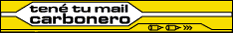

|  |
| Entrevista |

¡FUERZA CAPITAN! Ese es el pensamiento de toda la falange mirasol. De apoyar y darle aliento al jugador más desiquilibrante de nuestro fútbol en la década del '90. El propio Cr. Damiani dijo que "...por Bengoechea me entibio las manos". Por su parte el capitán demostró su hombría atacando el problema y sometiéndose a unos análisis para salir de toda duda. Eso solo lo hace quien está seguro de sí mismo. ¿Pablo, cuándo vas a tener novedades sobre los análisis que te realizaste en el Banco de Prótesis?
- Los resultados van a estar para mediados de febrero aproximadamente. Por ahora lo único que sabemos es que los químicos están trabajando para saber finalmente el resultado. El Cr. Damiani dijo que no ponía las manos en el fuego por nadie ni siquiera por su mujer, pero por vos se las entibiaba...
- No hay duda de que yo tengo un gran agradecimiento con él por todo lo que ha hecho y dicho públicamente y esas son las cosas que hacen seguir jugando al fútbol, que me hacen seguir pensando en entrenarme y en llegar de la mejor manera para defender a Peñarol. POr eso siempre he dicho que estoy muy a gusto aquí en el club y trato de retribuir todo lo que pueda el cariño que la gente de Peñarol me demuestra. El hincha está muy agradecido contigo y no duda de tu profesionalidad ¿La has notado?
- No he andado mucho en la calle pero por lo que la gente me ha comentado el apoyo del hincha de Peñarol está. De todas formas este es un tema persona y de aquí dentro de Peñarol. Esperemos los resultados de estos exámenes y después ver a ciencia cierta cual fue el motivo que llevó a que mi cuerpo tuviera cafeína. Lo ideal para mí es que se trata de mi metabolismo, cosa de que uno quedara con la mente más tranquila porque de no ser así, que yo fuera una persona que tiene dificultades para eliminar la cafeína, habría que empezar a investigar cómo ingresó la cafeína a mi cuerpo y digamos que ahí aumentarían las desconfianzas. Pero bueno, esperemos los resultados. Hablemos de lo deportivo ¿Cómo está Peñarol?
- La meta es llegar de la mejor manera para empezar la temporada, el plantel se ha entrenado responsablemente para afrontar el Apertura y la Libertadores. Lo demás es lo mismo de siempre, la obligación de ganar cada partido que jugamos. Está la tranquilidad que los trabajos de base, de pre-temporada han sido muy buenos. Intentaremos nuevamente por todos los medios de ser campeones. Tú no podrás jugar en el comienzo de la copa y Pandiani lo podría hacer recién en las semifinales...
- Es cierto en el comienzo estamos Walter (Pandiani) y yo suspendidos, pero el grupo tiene que estar preparado para que al jugador que le toque jugar pueda responder a las expectativas que todos nosotros tenemos creadas en cada uno. Pienso que no va a ser problema en jugar a nivel internacional y a nivel local porque en la segunda parte del año pasado ocurrió así y no hubo ningún tipo de problema. Creo que fue beneficiosa la competencia de Domingo y Miércoles. Espero que en este comienzo de año ocurra lo mismo, que el plantel se sienta bien físicamente y que no haya problemas de lesiones, que eso es lo único que le complica a un jugador. Las expectativas están creadas para que sea un buen año.
EL "pataleo" de Nacional Fiel a su estilo a lo largo de la historia, Nacional reclamó que Bengoechea debía ser sancionado también en el orden local. La AUF le informó que no tenían las potestades y le pasó la pelota a la Comisión Nacional de Educación Física, la cual realizó una conferencia de prensa para explicar el caso. Si bien las muestras de orina estaban en poder de la Comisión, la dueña, por decirlo de alguna manera, era la Confederación Sudamericana de Fútbol. La Comisión simplemente tenía las custodias de las mismas ya que se trataba de un evento organizado por el organismo continental del fútbol. Además se toma como "dopping" por la Comisión Nacional de Educación Física cuando la segunda muestra ratifica los resultados de la primera muestra. Y la segunda muestra no fue abierta, se la llevó a la Confederación y después fue cedida a Bengoechea porque nuestro jugador quería realizar los análisis. De aquí se desprende claramente que para la Comisión a Bengoechea no se lo puede juzgar por el caso de "dopping" ya que la segunda muestra no fue abierta.
Entendemos que el reclamo de Nacional es más que nada porque se trata de Bengoechea, el jugador después de Morena y de Piendibeni que más goles le han convertido al tradicional rival.